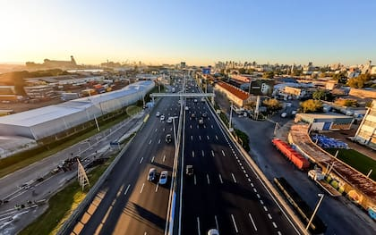

En el marco de la transformación del sistema de movilidad urbana, AUSA confirmó que la totalidad de sus trazas pasarán a operar bajo el esquema de Free Flow, un sistema que permite circular sin detenerse, ya que el cobro se realiza de manera electrónica (a través del TelePASE obligatorio).

En concreto, dejarán de funcionar las cabinas de cobro manual en la autopista Dellepiane, tanto en sentido hacia el centro como en dirección a la provincia. Con esta medida, la concesionaria completa la transición hacia un sistema 100% automatizado y se posiciona como la única del país con todas sus autopistas operando bajo esta modalidad.
Se recomienda a los conductores que aún no cuentan con el dispositivo TelePASE gestionar su adhesión con antelación para evitar contratiempos.
Administración del Consorcio